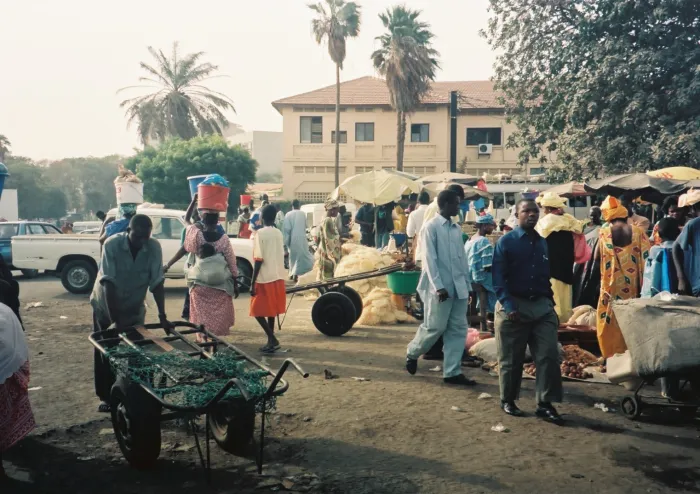

西アフリカ 、 サハラ砂漠 西南端に位置する 共和制 をとる 国家 。 北東に モーリタニア 、東に マリ 、南東に ギニア 、南に ギニアビサウ と国境を接している。
気候は熱帯乾燥気候気候に関して、セネガルは南部が「熱帯気候」 そのほかの地域は「乾燥気候」となっており、冬の北東からの季節風と夏の南西からの季節風により 雨季と乾季が存在します。 平均的にダカールでの雨季は6月～10月で、平均最高気温は27度 内陸部の気温は沿岸部よりはるかに高く40度に達することもあります。
ここには15〜19世紀にかけてアフリカ沿岸最大の奴隷貿易の拠点でした。 セネガル沿岸にある首都ダカールから3.5km離れた小さな島。 ゴレ島は「三角貿易」の基点となり、ヨーロッパ諸国はアフリカで武器や綿製品などを売り そこで得た奴隷をアメリカ大陸に売ることで、砂糖や綿などを得ていました。 1960年にセネガルが独立すると1978年には世界遺産となりました。
ここでは、多くの動物の保護を行っている。 フェンスで囲まれた3,500haの保護地区内には、大型肉食動物を除く、キリン、カバ、シマウマ、クロコダイルなどの動物が生息します。また、 絶滅危惧種となっているシロサイも保護されています。 比較的小さな公園に動物たちが生息しているため、至近距離で多くの動物を見ることができます。
文化的な交流としては、 在セネガル日本国大使館は1979年から35年以上に渡って 俳句コンクールを実施し、また日本映画上映など幾つかのイベントを通して 日本文化を発信している。
スポーツ面では、両国ともにサッカーが一定を人気を博してお ロシアで開催された2018 FIFAワールドカップでは、日本対セネガル戦も行われた。 また柔道も人気を博しており、当地では日本大使杯が定期的に開催されているほか、 柔道着や機材の無償供与が日本側から実施されている[28]。近年はセネガルから 日本へのバスケットボール留学も目立つようになった。
セネガルといえば首都のダカールが有名。 「世界一過酷なモータースポーツ競技」として世界的に有名な「パリダカ（ダカール・ラリー）」のゴールだったから。
店の看板がフランス語だから。 レストランやホテルはいいとして、マラリア薬の説明がフランス語というのにはまいった。
１，雨季の始まりとともに蚊の発生が急増し、マラリアの発症が徐々に増えはじめ10月から11月にかけて罹患者数はピークに達します。 ２， 雨季には高温多湿の環境から旅行者等の間で腸チフス、赤痢、サルモネラ等による消化器感染症の罹患者も増える傾向にあります。 ３，大気が汚染されるとともに乾燥、埃による呼吸器症状や結膜炎が増える傾向にあります。
(ア)交通事故 (イ)下痢性疾患 (ウ)マラリア・デング熱 (エ)結膜炎 (オ)細菌性髄膜炎 (カ)住血吸虫症 (キ)狂犬病 (ク)黄熱
対策
セネガル政府は、保健医療に関する国家開発政策（PNDS／1998－2007） およびセクター投資計画（PIDS／1998－2002）を策定し、 他の援助国の支援を受けつつ、保健医療環境の改善を推進するとともに、 1992年には同国唯一の公的医療教育機関である「国立保健医療・社会開発学校」を設立し、 医療従事者の養成に努力している。
セネガルのSDGs指標は2000年では48点でアフリカ諸国内では19位（世界では133位）でしたが、 2022年では指標は62点へ上がり順位も13位（世界では121位）へ上がっています。
SDGs１つ取り上げ(Goal2[飢餓を０に])
セネガルの栄養不足人口は120万人であり、（データの確認できる限りでは）アフリカで26番目に多い国です。 また、人口に占める栄養不足人口率は7.5%であり、アフリカで32番目となっています。
以下は栄養不足人口と人口に占める栄養不足蔓延率に関する2000年以降の推移を表します。 2000年代前半では240万人ほどいた栄養不足人口は減少傾向にあり、直近では120万人ほどまで半減しています。 また、それに連動して栄養不足蔓延率も24%ほどから、直近では8%ほどまで改善しています。